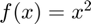
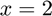
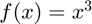
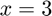
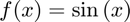
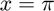
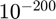
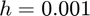

Differentiator
Class defining a differentiator.
Back to Numerical Differentiation Toolbox Contents.
Contents
Properties
| Variable | Symbol | Description | Format |
| derivative | - | df = Differentiator.derivative(f,x0)
Inputs: - f (1×1 function_handle): univariate, vector-valued function ( - x0 (1×1 double): evaluation point ( Outputs: - df (m×1 double): derivative of |
1×1 function_handle |
| partial | - | pf = Differentiator.partial(f,x0,k)
Inputs: - f (1×1 function_handle): multivariate, vector-valued function ( - x0 (n×1 double): evaluation point ( - k (1×1 double): element of Outputs: - pf (m×1 double): partial derivative of |
1×1 function_handle |
| gradient | - | g = Differentiator.gradient(f,x0)
Inputs: - f (1×1 function_handle): multivariate, scalar-valued function ( - x0 (n×1 double): evaluation point ( Outputs: - g (n×1 double): gradient of |
1×1 function_handle |
| directional | - | Dv = Differentiator.directional(f,x0,v)
Inputs: - f (1×1 function_handle): multivariate, scalar-valued function ( - x0 (n×1 double): evaluation point ( - v (n×1 double): vector defining direction of differentiation ( Outputs: - Dv (1×1 double): directional derivative of |
1×1 function_handle |
| jacobian | - | J = Differentiator.jacobian(f,x0)
Inputs: - f (1×1 function_handle): multivariate, vector-valued function ( - x0 (n×1 double): evaluation point ( Outputs: - J (m×n double): Jacobian of |
1×1 function_handle |
| hessian | - | H = Differentiator.hessian(f,x0)
Inputs: - f (1×1 function_handle): multivariate, scalar-valued function ( - x0 (n×1 double): evaluation point ( Outputs: - H (n×n double): Hessian of |
1×1 function_handle |
| vechessian | - | H = Differentiator.vechessian(f,x0)
Inputs: - f (1×1 function_handle): multivariate, vector-valued function ( - x0 (n×1 double): evaluation point ( Outputs: - H (n×n×m double): vector Hessian of |
1×1 function_handle |
| method | - | numerical differentiation method ('central difference', 'forward difference', or 'complex-step') (defaults to 'central difference') | char |
| hc | relative step size for central difference approximation (defaults to |
1×1 double |
|
| hf | relative step size for foward difference approximation (excluding Hessians) (defaults to |
1×1 double |
|
| hf2 | relative step size for foward difference approximation (specifically for Hessians) (defaults to |
1×1 double |
|
| hi | step size for complex-step approximation (defaults to |
1×1 double |
Constructor
d = Differentiator d = Differentiator(method)
| Variable | Symbol | Description | Format |
| method | - | (OPTIONAL) numerical differentiation method ('central difference', 'forward difference', or 'complex-step') (defaults to 'central difference') | char |
set_step_size
Differentiator.set_step_size(h)
Description: Sets the step size.
| Variable | Symbol | Description | Format |
| h | step size (for complex-step approximation) OR relative step size (for central and forward difference approximations) | 1×1 double |
Note
- The Differentiator class uses the central difference approximation by default as a compromise between accuracy and compatibility. The central difference approximation, like the forward difference approximation, can be used with any function, but it is also of a higher order than the forward difference approximation. The complex-step approximation is more accurate than the central difference approximation, but it is not compatible with all functions (in some cases, functions have to be replaced with their "complexified" versions to be compatible with the complex-step approximation).
- The complex-step approximation is still the most accurate approximation by far, and should be used if all functions that are incompatible with the complex-step approximation have been replaced with their complexified equivalent (i.e. replacing atan2 with iatan2).
- The reason that the differentiation functions are defined as properties rather than as methods is for speed. If they were defined as methods, each time they were called they would have to do checking of which differentiation method to use and call then call the appropriate functions. Defining them as properties avoids this repeated logical checking.
Example #1: Default Differentiator object.
Let's define a default Differentiator object.
d = Differentiator
d =
Differentiator with properties:
derivative: @(f,x)cderivative(f,x,obj.hc)
partial: @(f,x,k)cpartial(f,x,k,obj.hc)
gradient: @(f,x)cgradient(f,x,obj.hc)
directional: @(f,x,v)cdirectional(f,x,v,obj.hc)
jacobian: @(f,x)cjacobian(f,x,obj.hc)
hessian: @(f,x)chessian(f,x,obj.hc)
vechessian: @(f,x)cvechessian(f,x,obj.hc)
method: 'central difference'
hc: 6.0555e-06
hf: 1.4901e-08
hf2: 6.0555e-06
hi: 1.0000e-200
Note that the Differentiator class uses the central difference approximation by default. Evaluating the derivative of  at ,
f = @(x) x^2; df = d.derivative(f,2)
df =
4.0000
Taking a look at the error (the expected result is 4),
err = abs(df-4)
err = 3.5696e-12
Example #2: Specificying a differentiation method.
Let's define a Differentiation object that uses the forward difference approximation.
d = Differentiator('forward difference');
Evaluating the derivative of  at ,
f = @(x) x^3; df = d.derivative(f,3)
df = 27.0000
Taking a look at the error (the expected result is 27),
err = abs(df-27)
err = 5.3644e-07
Example #3: Adjusting the step size.
Let's define a Differentiation object that uses the complex-step approximation.
d = Differentiator('complex-step');
Evaluating the derivative of  at ,
f = @(x) sin(x); df = d.derivative(f,pi)
df =
-1
Taking a look at the error (the expected result is -1),
err = abs(df-(-1))
err =
0
Now, let's increase the step-size from  (the default step size that is used with the complex-step approximation) to .
d.set_step_size(0.001)
ans =
Differentiator with properties:
derivative: @(f,x)iderivative(f,x,obj.hi)
partial: @(f,x,k)ipartial(f,x,k,obj.hi)
gradient: @(f,x)igradient(f,x,obj.hi)
directional: @(f,x,v)idirectional(f,x,v,obj.hi)
jacobian: @(f,x)ijacobian(f,x,obj.hi)
hessian: @(f,x)ihessian(f,x,obj.hi,obj.hc)
vechessian: @(f,x)ivechessian(f,x,obj.hi,obj.hc)
method: 'complex-step'
hc: 6.0555e-06
hf: 1.4901e-08
hf2: 6.0555e-06
hi: 1.0000e-03
We can see that hi has been updated to 1.0000e-03. Now, evaluating the same derivative as before,
df = d.derivative(f,pi)
df = -1.0000
Taking a look at the error once more,
err = abs(df-(-1))
err = 1.6667e-07
Note that the error increases substantially when we use a higher step size.